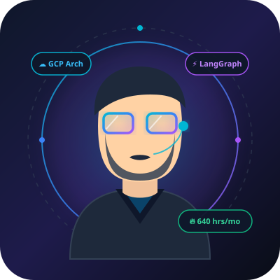

Architecting Agentic AI & Enterprise Cloud Systems.
I am Daniel Sánchez, a Software Engineer & AI Specialist with 5+ years at Equifax. Dual-cloud certified (GCP Professional Cloud Architect & AWS Solutions Architect). Passionate about turning complex operational bottlenecks into autonomous, high-throughput software solutions.

Daniel Sánchez
Senior SWE & AI Architect
Quantifiable Business Impact
Delivering High-Velocity Engineering Results
LangGraph Multi-Agent Orchestration Engine
An interactive visual simulation of the agent-orchestrated test automation platform Daniel engineered at Equifax, saving 640 engineering man-hours each month.
CI Ingestion Trigger
Webhooks ingest test suite specs into LangGraph state
Supervisor Agent
Plans sub-graphs & clusters tests across parallel nodes
Worker Fleet (Selenium)
Parallel containerized browser test runners
LLM Self-Healing Node
Reflection cycle updates broken DOM selectors dynamically
BigQuery & Telemetry
Pushes execution traces & notifies Slack channels
{
"graph_state": "IDLE",
"awaiting_trigger": true,
"nodes_registered": [
"Supervisor",
"WorkerFleet",
"LLMReflection",
"BigQuerySink"
]
}
Featured Engineering Projects
Architectural blueprints, core implementations, and quantifiable business outcomes across Agentic AI, Cloud Platforms, and Full-Stack Systems.
LangGraph Autonomous E2E Automation Platform
Migrated a legacy E2E test framework into an autonomous agent-orchestrated architecture. Features dynamic planning, parallel containerized runners, and LLM reflection loops for self-healing DOM selectors.
Cloud-Native Workforce Analytics & Looker Suite
Engineered an event-driven serverless workforce analytics solution delivering actionable organizational insights to global executives using GCP Cloud Functions, Cloud Scheduler, and Looker dashboards.
Enterprise Automation Portal & Microservices
Full-stack internal business operations application built with Angular 19 and Spring Boot RESTful microservices. Automated complex client workflows with OAuth security protocols and PostgreSQL persistence.
Hybrid ETL & Data Lake Validation Platform
Architected cross-engine reconciliation framework integrating BigQuery (SQL/NoSQL hybrid), PostgreSQL, Oracle, and MSSQL. Validated schema integrity during petabyte-scale data lake migrations.
Autonomous Logistics Invoice Reconciliation Engine
Architected an end-to-end event-driven reconciliation system featuring Dispatcher-Worker queue models, Document AI OCR ingestion, 3-way PO verification, and ElasticSearch telemetry.
Secure CI/CD & AI-Assisted Velocity Pipelines
Architected high-velocity deployment pipelines using GitHub Actions and Jenkins. Integrated OAuth security gates and pioneered team-wide GitHub Copilot adoption, accelerating delivery velocity across teams.
Ask Daniel's Recruiter AI Assistant
Have questions about Daniel's technical depth, certifications, or leadership experience? Click any prompt chip below or type custom questions to evaluate candidate fit instantly.
DanBot · AI Recruiter Agent
Trained on Daniel's Experience & Architecture
Professional Experience & Leadership
Proven track record delivering scalable enterprise software, leading cross-functional teams, and mentoring engineers.
Software Engineer · AI & Automation Specialist
Bachelor's Degree in Computer Science & Informatics
Graduated from Costa Rica's highest-ranking engineering university. Comprehensive foundations in distributed systems, algorithm analysis, relational database architecture, software design patterns, and computer network security.
Industry Certifications
Rigorous cross-cloud and cybersecurity accreditations validating real-world architectural leadership.
Professional Cloud Architect
Advanced certification validating end-to-end cloud architecture design, security compliance, scalability, multi-region failover, and serverless big data topologies.
AWS Certified Solutions Architect
Demonstrated mastery architecting resilient, high-performing, cost-optimized, and secure cloud infrastructures across AWS compute, networking, and storage stacks.
Certified in Cybersecurity (CC)
Foundational and operational information security, identity & access management (IAM), network security controls, and defense-in-depth principles applied across engineering pipelines.
Google Agent Development Kit (ADK) · Autonomous AI Agent Architectures · GCP Machine Learning Engineer Specialization
Technical Skills Matrix
Multi-paradigm languages, cloud-native infrastructure, AI agents, and enterprise data technologies.
AI & Automation
Cloud & DevOps
Back-End & Microservices
Front-End Engineering
Data & Databases
Security & Leadership
Ready to Accelerate Your Engineering Organization?
Whether you are hiring for a Senior Software Engineer, Staff Engineer, or AI Solutions Architect, I bring battle-tested enterprise expertise, dual-cloud credentials, and autonomous AI automation systems that drive measurable ROI.